Kanonji, Kagawa: things to do, food and stays
Kanonji · Kagawa
Kanonji
Highlighted on the Kagawa map.
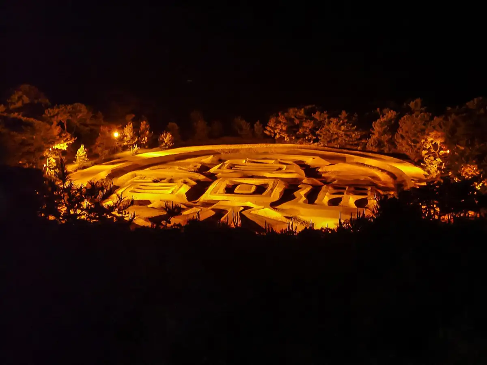
Stay
ホテルルートイン観音寺
Hotel Route Inn Kan'Onji
Hotel at Betsukomyosekijinko Onsen in Minami, Kanonji with a large communal bath.
リブマックスリゾート観音寺
Ribumakkusu Resort Kan'Onji
Resort hotel at Nozomuzekkeitennen Onsen in Ikeyukishiri, Kanonji with scenic views.
カラーパレットの空泊(そらはく) COTON -泊Rutto
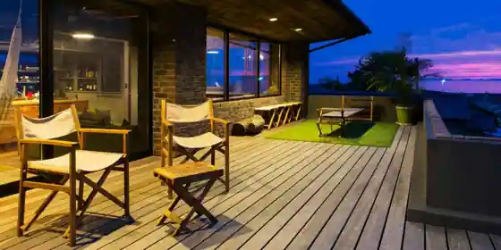
Karaparetto No Sora Haku (Sorahaku) COTON - Haku Rutto
ファミリーロッジ旅籠屋・讃岐観音寺店
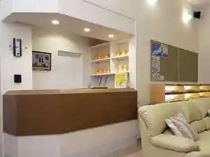
Famiri Lodge Hatago Ya Sanuki Kan'Onji
Mountain lodge in Sakamoto, Kanonji with breakfast available and family-friendly stays.
ＨＯＴＥＬ ＡＺ 香川観音寺店

HOTEL AZ Kagawa Kan'Onji
Inn in Sakamoto, Kanonji; 12-minute drive from Takamatsujidoshado(Onohara) IC.
観音寺グランドホテル
Kan'Onji Grand Hotel
Hotel in Sakamoto, Kanonji with buffet meals and breakfast available.
ゲストハウス 輪
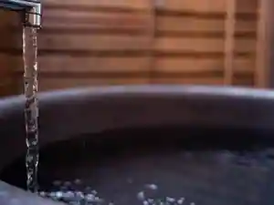
Guesthouse Wa
Guesthouse in Sakamoto, Kanonji with open-air baths.
スマイルホテル観音寺
Sumairu Hotel Kan'Onji
ホテルサニーイン
Hotel Saniin
ハイパーイン観音寺駅前
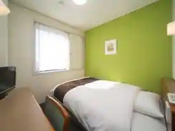
Haipain Kan'Onji Ekimae
Inn in Sakae, Kanonji with business travelers; 3-minute walk from Jrkan'Onji Station.
Ｔａｂｉｓｔ 琴弾荘
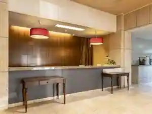
Tabist Kon Dan So
ＳＥＡＳＩＤＥ ＣＯＴＴＡＧＥ ＧＲＥＥＮ ＢＲＥＥＺＥ
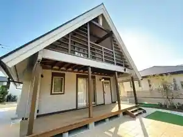
SEASIDE COTTAGE GREEN BREEZE
Dining
カマ喜ri
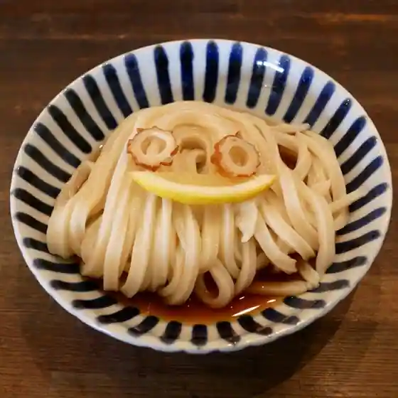
Kama Ki ri
西端手打 上戸うどん
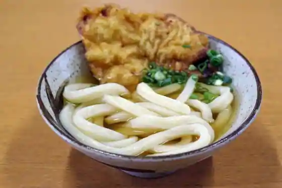
Seitan Teuchi Jogo Udon
手打ちうどん つるや
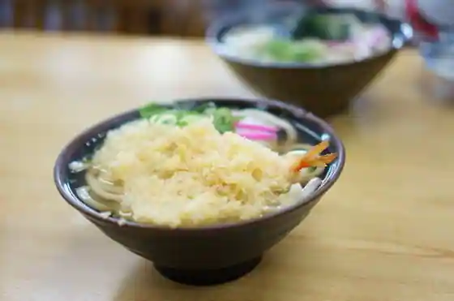
Teuchi Chiudon Tsuruya
かなくま餅
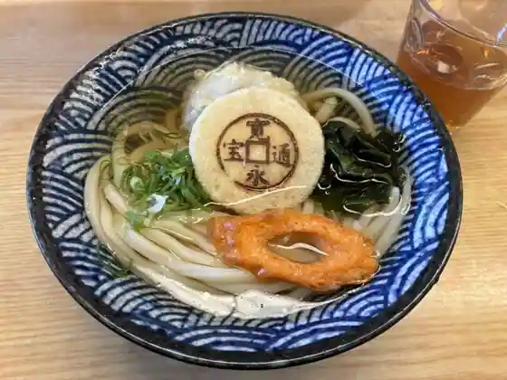
Kanakuma Mochi
讃岐麺処 山岡
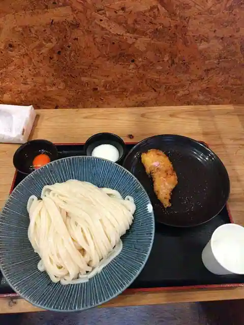
Sanuki Men Tokoro Yamaoka
大喜多
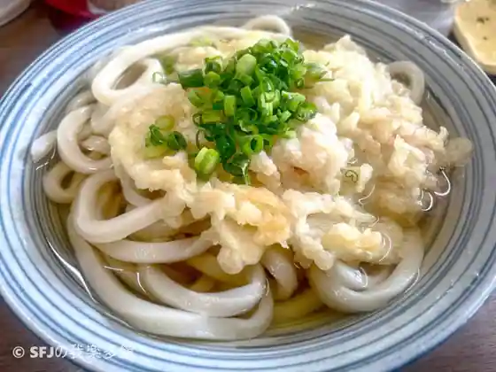
Okita
本場かなくま餅 福田
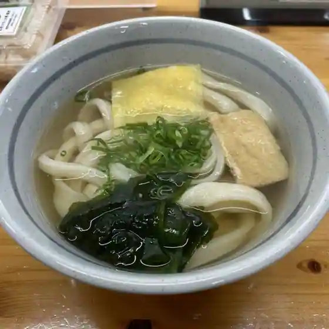
Honba Kanakuma Mochi Fukuda
伊吹いりこセンター
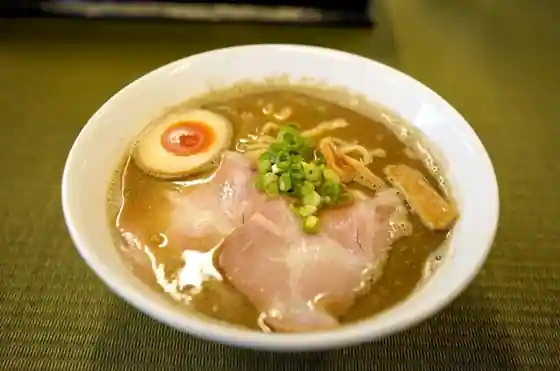
Ibuki Iriko Center
うまじ家 豊浜店
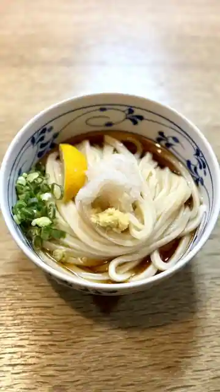
Umaji Ie Toyohama
IZAKAYA 時々 観音寺店
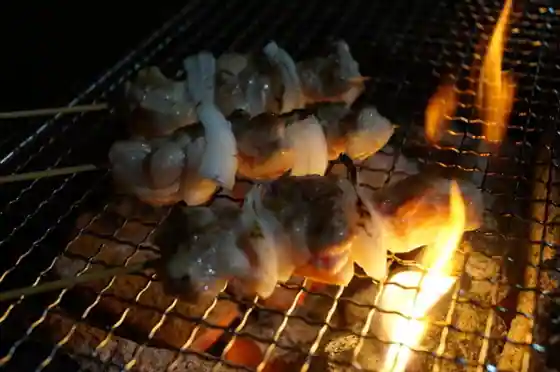
IZAKAYA Tokidoki Kan'Onji
骨付鳥 味鶴
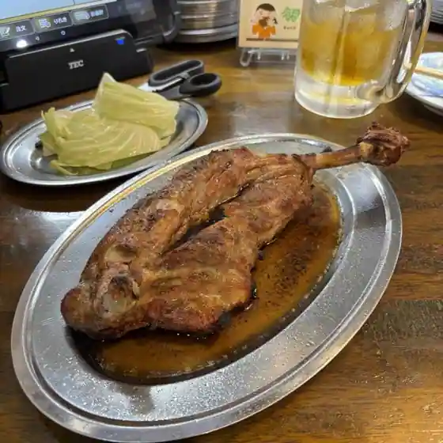
Hone Tsuki Tori Aji Tsuru
麺紡
Men Bo
合田うどん
Goda Udon
中丸水産
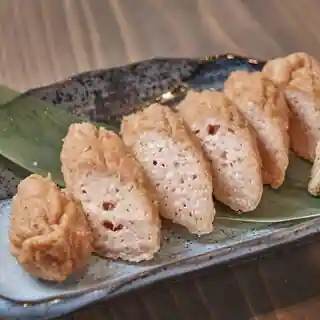
Nakamaru Suisan
武蔵
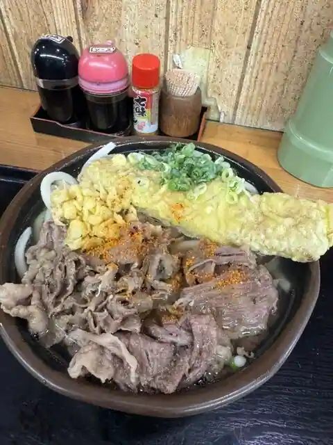
Musashi
かじまや
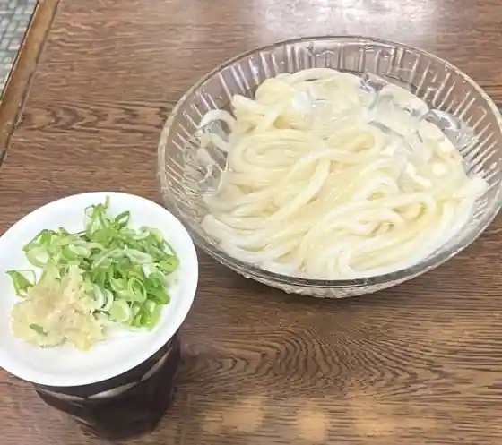
Kajimaya
白栄堂 柳町本店
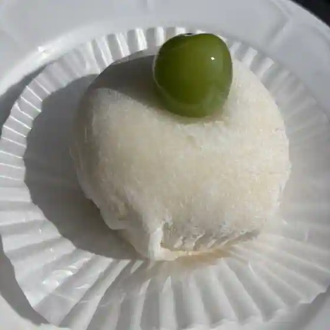
Shiro Sakae Do Yanagimachi Hon
柳川 本店
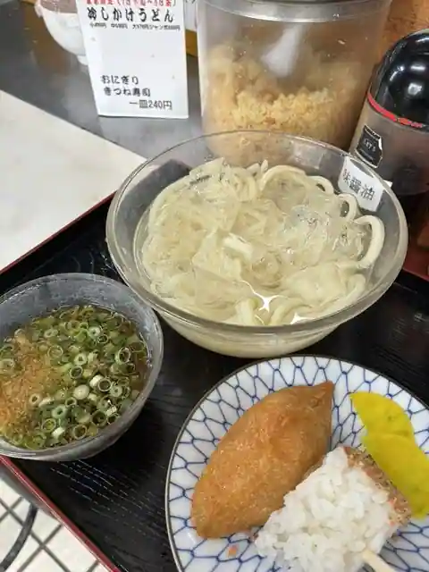
Yanagawa Hon
うどん好き
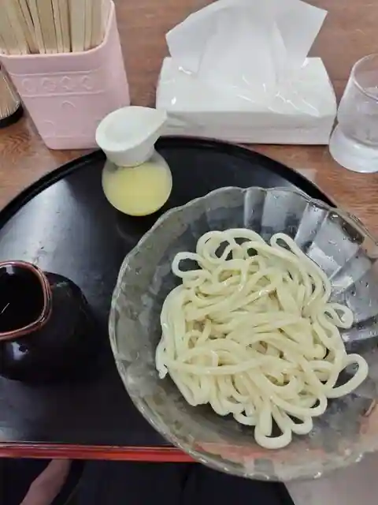
Udon Suki
中華そば 虎龍
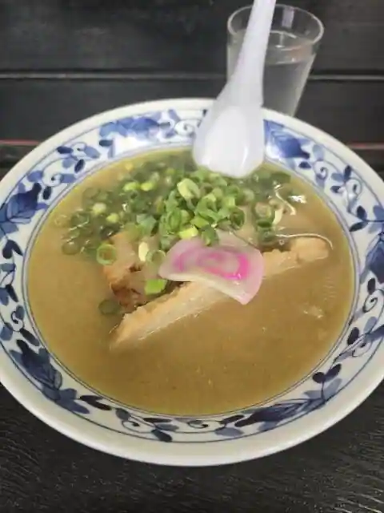
Chuka Soba Tora Ryu
将八うどん 観音寺本店
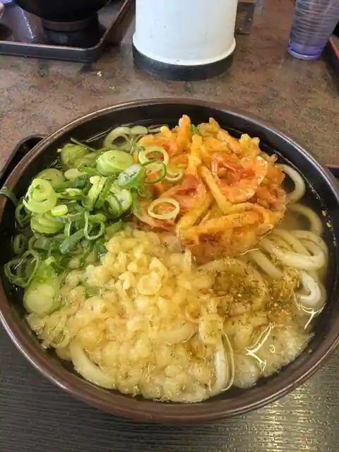
Sho Hachi Udon Kan'Onji Hon
麺匠 いりこや
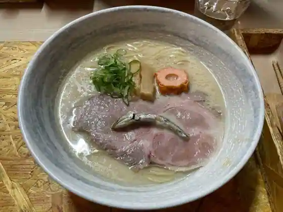
Men Takumi Irikoya
中華そば 源平
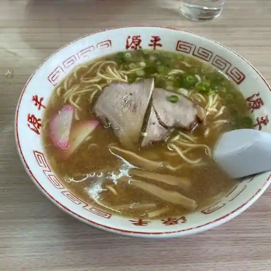
Chuka Soba Genpei
やまねこ
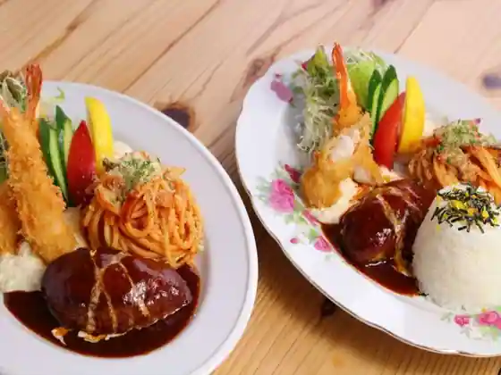
Yamaneko
Sights
Zenigata Sae
Kon Dan Park
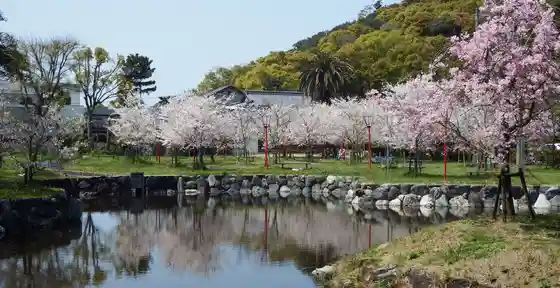
Ariake Hama
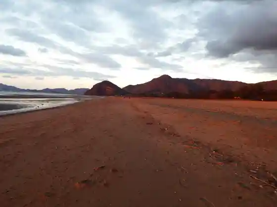
Shinkei In
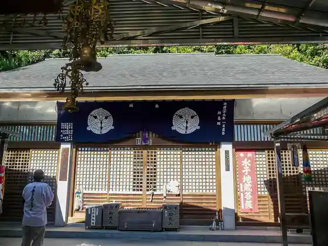
Kanonji
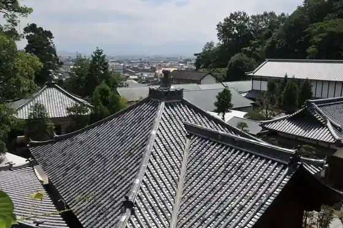
Takaya Shrine
Honen Ike Entei